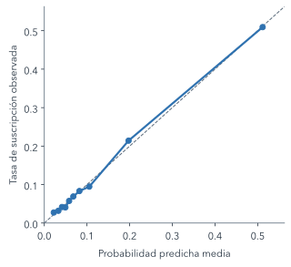

Quarto, publicación reproducible, agentes de programación, Markdown, Python, EPUB, análisis de datos, k-means
La vía rápida terminó con un informe y una versión ganadora. Este capítulo les hace una segunda pregunta a los mismos resultados: ¿a quién llama la versión ganadora? La respuesta está en un archivo que el informe nunca abrió. La lista con la que trabajaría el centro de llamadas se inclina hacia algunas edades: a un grupo se lo llama mucho más que a otro. Un informe puede omitirlo. Una ficha del modelo (model card) no, y escribirla es la tarea más grande de este capítulo: entregada entera al agente, con un plan primero y sus comprobaciones después.
El diseño que lo responde es el que el repositorio ya tiene: un script calcula cada resultado una sola vez, y todos los documentos los leen, así que la ficha, el informe y todo lo que venga después citan la misma ejecución.
En este capítulo
Explicar por qué cada resultado se calcula una sola vez, y qué detectan las pruebas, las guardas y el renderizado.
Pedirle a un agente una ficha del modelo como una sola tarea más grande, con un plan primero, y juzgarla por sus comprobaciones.
Numerar las secciones y referirse a ellas, a las tablas y a las figuras, de modo que cada referencia se resuelva en HTML, Word y PDF.
Predecir qué le hace a cada documento un ajuste cambiado, y luego reconstruir y revisar.
Punto de partidatu repositorio acme-eval al final del Capítulo 3, o checkpoints/14-eval-start/.
Construyesmodel-card.qmd con references.bib, y un informe con secciones numeradas, en HTML, Word y PDF.
Punto de controlcheckpoints/15-eval-results/
Lo que vas a construir
Figura 10.1: La parte superior de la ficha del modelo terminada, renderizada a partir de checkpoints/15-eval-results/model-card.qmd.
10.1 Calcular una vez, comprobar de tres maneras
scripts/evaluate.py es el único código del repositorio que ajusta un modelo. Escribe cinco archivos de texto plano en outputs/, los mismos bytes en cada ejecución en el entorno que fija uv.lock, porque cada elección aleatoria, la división, los modelos y el bootstrap, tiene una semilla fija. En la ejecución de este libro la mejor versión es v3, medida en 11,303 contactos de prueba, de los que se suscribió el 11.7% (la tasa base):
Tabla 10.1: Lo que escribe la evaluación.
Archivo
Contiene
summary.json
mejor versión, tamaño del conjunto de prueba, tasa base, semillas, versiones
metrics.csv
métricas de cada versión, con intervalos bootstrap
segments.csv
lo mismo por franja de edad y ocupación
calibration.csv
tasas predichas frente a observadas, en diez intervalos
curves.csv
curvas ROC y de precisión-recall
Las métricas son el ROC AUC, la probabilidad de que una versión ponga a alguien que se suscribe, elegido al azar, por encima de alguien que no, y tres para la parte superior de la lista: el recall, la proporción de quienes se suscriben a la que llegan las llamadas (llamar al azar al 10% superior llegaría al 10% de esas personas); la precisión, la proporción de llamadas que llegan a una de esas personas; y el lift, la precisión dividida por la tasa base, la proporción de todos los contactos que se suscriben. El intervalo bootstrap de una métrica abarca el 95% central de sus valores cuando el conjunto de prueba se vuelve a sortear, con reposición, muchas veces. Tres tipos de comprobación protegen cosas distintas, y un repositorio necesita los tres:
Tabla 10.2: Tres tipos de comprobación, y lo que detecta cada uno.
Comprobación
Se ejecuta
Detecta
Pruebas (uv run pytest)
sobre el código y los datos
un archivo de datos cambiado (su suma de verificación); una fuga
Guardas (claim(…) en un documento)
al renderizar un documento
una oración que los resultados ya no respaldan
El renderizado
en cada documento, en cada formato
una referencia que no se resuelve; una celda que falla
Una suma de verificación (checksum) es la huella de un archivo: cambia un byte de los datos y deja de coincidir. Una prueba no lee la prosa, y una guarda no prueba el código; ninguna nota una etiqueta escrita a mano que quedó desactualizada, algo que solo notan quien lee o una predicción puesta a prueba con una reconstrucción (Sección 10.4).
Detente y piensa
Los datos tienen una columna, duration, la duración de cada llamada en segundos. La propia página del conjunto de datos, citada en data/README.md, dice que “highly affects the output target” (afecta mucho a la variable objetivo). ¿Debería usarla una versión?
Respuesta
No. La duración de una llamada solo se conoce después de la llamada, y el trabajo del modelo es elegir a quién llamar. Un modelo que la recibiera se evaluaría con algo que nunca va a tener en servicio: una fuga de información (leakage), una columna que lleva la respuesta a la evaluación. Ningún renderizado lo notaría; una prueba sí (tests/test_models.py), y por eso el repositorio la tiene.
10.2 Una ficha del modelo, como una tarea más grande
Una ficha del modelo es un documento breve que acompaña a un modelo: qué es, para qué sirve y para qué no, cómo se desempeña en general y en los grupos a los que afecta, y qué limitaciones le conocen quienes lo hicieron. Mitchell y colegas propusieron el formato en 2019, con una lista fija de secciones, que es el vocabulario para pedirla.
La ficha es un buen ejemplo de una tarea para entregar entera (Sección 2.8): puedes enunciar el resultado (esas secciones, a partir de esos archivos), y sus comprobaciones se ejecutan sin ti (las guardas, las referencias, el renderizado). Así que pide primero un plan, léelo, y solo entonces deja que el agente trabaje. Empieza una rama para ella, como para cualquier cambio que vayas a revisar:
Tú haces
git switch -c model-card
Pídele a tu agente
Plan primero; espera mi visto bueno. Agrega model-card.qmd, en inglés, para la mejor versión, con las secciones de Mitchell et al. (2019). Lee solo outputs/ y data/README.md; los subgrupos por edad y ocupación, de outputs/segments.csv, y la calibración, de outputs/calibration.csv. Cita el artículo y los datos en un references.bib nuevo, abriendo antes cada DOI. Protege con `claim` cada oración cuyo texto dependa de los resultados. Renderiza a html, docx y typst; di qué no pudiste verificar.
Probablemente ejecute
responde con un plan · tras tu visto bueno: escribe references.bib y model-card.qmd · uv run quarto render model-card.qmd
El artículo, “Model Cards for Model Reporting”, tiene nueve secciones: detalles del modelo, uso previsto, factores, métricas, datos de evaluación, datos de entrenamiento, análisis cuantitativos, consideraciones éticas, y advertencias y recomendaciones. Compara el plan con ellas, como lo haría quien revisa. Un buen plan enumera las secciones en orden, dice de dónde sale cada número, nombra los subgrupos (los resultados de cada franja de edad y de cada ocupación) y la figura, dice cómo va a revisar las referencias, y calcula etiquetas como “top 10%” a partir de outputs/ en lugar de escribirlas a mano. Si al plan le falta algo, dilo antes de que empiece. Luego responde: Adelante.
Cuando termina, las comprobaciones son las que pidió el prompt:
Las guardas. Lee cada claim(…) del archivo: cada una debe enunciar una oración de la ficha, y su condición debe calcular esa oración a partir de outputs/. Una guarda cuya condición nunca puede ser falsa, como un nombre leído de los resultados comparado consigo mismo, no protege nada.
Las referencias.references.bib debe tener a Mitchell et al. y el conjunto de datos, cada uno con un DOI que puedas abrir. Cuando se construyó esta ficha, el registro del DOI del conjunto de datos tenía los autores mezclados, y el agente citó el conjunto de datos tal como lo da la propia página del repositorio: una razón para abrir los DOI, no solo para juntarlos.
La lista de lo que no pudo verificar, la parte más útil del informe de una tarea más grande: cómo se hizo la división, cómo se formaron los intervalos de calibración, que el texto de ética es un encuadre suyo. Cada elemento es una pregunta para ti, no un defecto que aceptar.
El renderizado. Abre los tres formatos, y mira los subgrupos como los mirarían las personas que los forman.
Los subgrupos de la ficha terminada lo dejan claro. Con v3, el 10% superior de la lista, al que se llama, contiene el 47.9% de los contactos de la franja 60+, pero el 5.0% de los de la franja 40-49. El ordenamiento sigue la frecuencia con que se suscribe cada franja, y en estos datos la franja 60+ es la que más se suscribe (38.8%). Eso es exacto, y una ficha debe decirlo. La edad es una característica protegida por la ley del Reino Unido: la Ley de Igualdad (Equality Act) de 2010 protege a las personas de la discriminación por esa causa. Los datos son de un banco portugués, pero la ficha pide una revisión legal antes de cualquier uso en el Reino Unido. Un banco tiene que saberlo antes de confiar en el ordenamiento.
Tabla 10.3: Los subgrupos de la mejor versión por franja de edad, a partir de las salidas de la evaluación: la proporción de cada franja en la lista de llamadas, la tasa de suscripción de la franja y la proporción de sus suscriptores a la que llegan las llamadas.
Franja de edad
Contactos de prueba
Llamados
Tasa de suscripción
Recall
18-29
1,337
20.0%
17.1%
51.8%
30-39
4,512
8.2%
10.7%
37.9%
40-49
2,953
5.0%
8.6%
32.0%
50-59
2,102
7.4%
9.7%
41.9%
60+
399
47.9%
38.8%
70.3%
Tabla 10.4: Lo encontrado al probar la ficha, el 2026-11-18.
Lo que ves
La solución
El primer renderizado se detiene: las tablas con estilo de pandas (df.style) necesitan jinja2
escribir la tabla de otra manera, en lugar de agregar una dependencia
El PDF cita con otro estilo, con una segunda página “Bibliography”
citeproc: true bajo typst:
Un model-card.html desactualizado tras un renderizado fallido
leer las últimas líneas del renderizado antes de abrir el archivo
10.3 Secciones, números y referencias
El informe suma dos secciones, y quien lee un documento en tres formatos necesita encontrarlas. Las secciones numeradas y las referencias cruzadas lo hacen posible, y cada una es un ajuste o una etiqueta:
Tabla 10.5: Las referencias, y el ajuste de cada una.
Pides
En Quarto
Se ve como
secciones numeradas
number-sections: true
“2 Who is called”
citar una sección
## Who is called {#sec-segments} y @sec-segments
“Section 2”, un enlace
una tabla o figura
una etiqueta tbl- o fig-, luego @tbl-…
“Table 2”, “Figure 2”
un solo estilo de cita
citeproc: true para typst
“(Mitchell et al. 2019)” en los tres
La comprobación está en el prompt: una referencia sin resolver se renderiza como “??”, en todos los formatos.
Pídele a tu agente
En report.qmd, numera las secciones y agrega dos, en inglés: a quién se llama (recall en el 10% superior por franja de edad, de outputs/segments.csv, tabla con etiqueta `tbl-segments`) y calibración (figura con etiqueta `fig-calibration`, de outputs/calibration.csv), cada una con guarda si su redacción depende de los resultados; remite a ambas desde el párrafo inicial con referencias @sec-. Renderiza los tres formatos y comprueba que ninguna referencia muestre "??".
Probablemente ejecute
edita report.qmd · uv run quarto render report.qmd
La calibración pregunta si una probabilidad predicha puede leerse como una tasa: de los contactos a los que el modelo les da un 20%, ¿se suscribe más o menos uno de cada cinco? La Figura 10.2 la dibuja para la mejor versión.

Figura 10.2: Calibración de la mejor versión en los contactos de prueba: la tasa de suscripción observada frente a la probabilidad predicha media, en intervalos de igual tamaño. Sobre la diagonal discontinua, las predicciones son iguales a las tasas.
Con v3, ningún intervalo se aleja más de 1.7 puntos porcentuales de la diagonal; con la versión más antigua, v1, la mayor distancia es 5.7. El informe dice con una guarda qué versión está mejor calibrada, porque esa palabra, a diferencia de los números, no se deriva sola de los datos.
Cuando los dos documentos se rendericen, revisa la rama como en la Sección 3.7: el alcance (model-card.qmd, references.bib, report.qmd, quizá AGENTS.md), un número contra outputs/, y un clon nuevo. Luego haz commit.
¿Dos minutos sin avanzar? Pega esto en tu agente, que respalda tu trabajo y lleva el proyecto hasta este punto; luego sigue leyendo desde aquí.
Catch me up: follow ../quarto-workshop/checkpoints/15-eval-results/README.md
10.4 Cambia un ajuste, explica la reconstrucción
El centro de llamadas tiene capacidad para más llamadas, así que TOP_SHARE en src/acme_eval/metrics.py, la proporción de la lista a la que se llama, puede duplicarse. No hay un prompt: esta es la prueba del diseño, y puedes hacerla a mano.
ImportantePruébalo
Predice. Antes de duplicar TOP_SHARE, anota qué números del informe y de la ficha van a cambiar, cuáles no, y si algo va a detener el renderizado.
Reconstruye: duplícala, ejecuta uv run python scripts/evaluate.py y renderiza los dos documentos.
Deshaz: git restore el archivo, y luego vuelve a evaluar y a renderizar.
Has terminado si puedes nombrar lo que cambió, lo que no y lo que se detuvo.
Detente y piensa
¿Qué debería cambiar, qué no, y cuál es la trampa?
Respuesta
Cambian la cantidad de llamadas (a 2,261) y cada métrica de la parte superior de la lista: el recall, la precisión, el lift, la proporción llamada de cada franja. El ROC AUC, la puntuación de Brier (el error cuadrático medio de las probabilidades) y la calibración no: describen la lista entera, no dónde se corta. La trampa es la proporción nombrada con palabras: un “top 10%” escrito a mano se queda. En el proyecto terminado, los dos documentos se detienen en la guarda de un pie, y dos pruebas unitarias que fijan la regla fallan, a propósito.
De la bitácora del proyecto
Cuando se probó este cambio para el libro, con la lista duplicada, “top 10%” seguía escrito a mano en etiquetas y en un pie, junto a las cifras nuevas. Los números se habían movido y las palabras no. Ahora las etiquetas calculan la proporción, y cada pie que la nombra tiene una guarda. Después de cambiar un ajuste, busca en cada salida su valor anterior escrito con palabras.
Resumen
Un script calcula cada resultado una sola vez en archivos de texto plano; todos los documentos los leen, así que quien revisa puede confiar en que el informe y la ficha citan la misma ejecución.
Las pruebas revisan el código y los datos, las guardas revisan la prosa y el renderizado revisa las referencias; ninguna ve una etiqueta escrita a mano, algo que sí revelan una predicción y una reconstrucción.
Una ficha del modelo tiene un conjunto fijo de secciones, que es el vocabulario para pedirla; sus subgrupos son donde se nota el efecto de un modelo en las personas.
Dale a un agente una tarea más grande con un plan primero, y luego juzga el resultado por sus guardas, sus referencias, su lista de lo que no pudo verificar y el renderizado.
Las secciones numeradas y las tablas y figuras con etiqueta dan referencias que se resuelven en todos los formatos; citeproc: true hace que un PDF de Typst cite como los demás.
El proyecto ya tiene dos documentos para quienes leen. Su próximo público va a estar en una reunión, frente a una pantalla.
Lecturas adicionales
Margaret Mitchell y colegas, Model Cards for Model Reporting, Proceedings of the Conference on Fairness, Accountability, and Transparency (FAT* ’19), 220–229 (consultado el 2026-11-18).
![La parte superior de una página web al ancho de un teléfono: el título, Model card: contact-ranking model (ficha del modelo: modelo que ordena contactos), y el subtítulo, Acme Signals (a fictional company), una empresa ficticia. Tras una línea discontinua que marca un corte, la sección 2, Intended use (uso previsto), da el uso principal, ordenar la lista de clientes de un banco para una campaña de depósitos a plazo, su público principal y lo que queda fuera de su alcance, desde decisiones de crédito hasta cualquier versión que use duration.](../media/figures/eval-card-top.png)